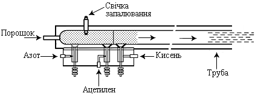
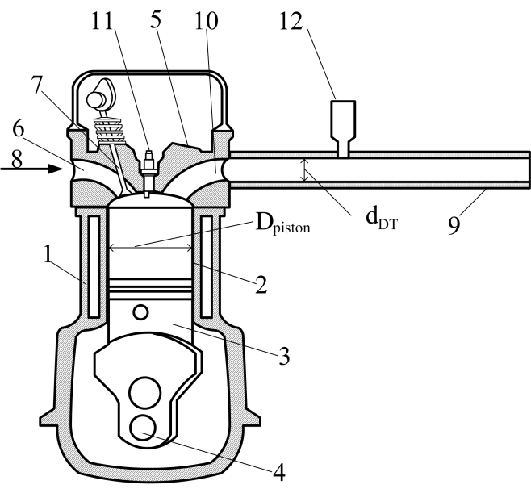

Наша розробка
За допомогою цього апарату ми наносимо метал на кераміку
Імпульсна компресійно-детонаційна гармата
як вдосконалений метод детонаційного нанесення покриттів
Традиційна детонаційна гармата складається з гладкої труби з закритим одним торцем, систем подачі палива і окиснювача, системи запалювання, системи продувки нейтральним газом і імпульсного дозатора порошку (рис. 1).
Довжина детонаційної труби перевищує довжину LDDT переходу горіння в детонацію з метою ініціювання детонації за допомогою традиційної свічки запалювання. Діаметр трубки dDT перевищує розмір детонаційного осередку λ для того, щоб забезпечити перехід від горіння до детонації. Експериментально встановлено, що для гладкої труби LDDT = 20-40dDT. Таким чином, розміри детонаційного осередку впливають на внутрішній діаметр і довжину детонаційної гармати.
Згідно з експериментальними даними, розмір осередку в стехіометричній паливно-повітряної суміші вище, ніж у відповідній паливно-кисневої суміші при аналогічних термодинамічних умовах. Наприклад, розмір осередку в суміші пропан / повітря перевищує λ = 50-75 мм [9, 10] при нормальній температурі і тиску. Для порівняння, розмір осередку суміші пропан / кисень перевищує λ = 1-2 мм. Це викликає збільшення розміру детонаційної гармати в разі її роботи на паливно-повітряної суміші.
Збільшений розмір гармати також призводить до обмеження частоти пострілів. Крім того, збільшений діаметр трубки призводить до нерівномірного покриття. Таким чином, традиційна детонаційна гармата, що живиться паливно-повітряною сумішшю, неефективна.
Рис. 1. Схема традиційної детонаційної гармати
Стиснення паливо/окислювальної суміші призводить до зменшення розміру детонаційної осередки. Але є проблема в стисненні суміші через те, що один кінець труби відкритий. Повинно бути застосоване спеціальне рішення для стиснення. Детонаційна гармата з імпульсним стисненням використовує явище надзвукового згоряння, в якому детонація всередині труби генерує імпульс тиску в період стиснення хімічно активного газу, продукти детонації якого швидко розширюються в бік відкритого торця труби. Імпульсне стиснення суміші у закритого торця детонаційної труби створюється поршневим компресором таким чином, що масова витрата газу у «закритого» торця труби перевищує масову витрату біля відкритого торця труби. Це викликає стиснення повітряно-паливної суміші всередині труби. Детонація ініціюється, коли суміш вже стиснута.
Схема пристрою PCD-гармати показана на рис. 2. Пристрій складається з поршневого компресора (1), що складається з циліндра (2) і поршня (3), як показано на малюнку. Зворотно-поступальний рух поршня (3) забезпечується кривошипно-шатунним механізмом (4), сполученим із зовнішнім приводом. Верху циліндра (2) розташована головку циліндра (5) з впускним патрубком (6) і клапаном (7). Система подачі палива і повітря (8) з'єднана з впускним патрубком (6). Детонаційна трубка-циліндр (9) з'єднана з циліндром (2) поршневого компресора (1) через випускний патрубок (10) в голівці циліндра (5). Примусове займання суміші проводиться за допомогою звичайної автомобільної системи запалювання (11). Порошок впорскується в трубу за допомогою пристрою подачі порошку (12). Спеціальний клапан, розташований в патрубку (10), використовувався для запобігання зворотного потоку продуктів згоряння під час такту впуску.
Рис. 2. Схема PCD-гармати: 1 - компресор поршневого типу; 2 - циліндр; 3 - поршень; 4 - кривошипно-шатунний механізм; 5 - головка компресора; 6 - впускний патрубок; 7 - клапан; 8 - система подачі палива; 9 - труба; 10 - патрубок; 11 - свічка запалювання; 12 - бункер для порошку.
Our development
This device we apply for metal coating the ceramics
Pulse compression detonation gun
as advanced technique of detonation coating
As usual, a detonation gun consists of a smooth tube with closed one end, systems of fuel and oxidizes supplying, an ignition system, a system of neutral gas blowing and a pulsed powder feeder (Fig. 1).
A length of detonation tube exceeds a deflagration to detonation transition length LDDT to initiate detonation by a traditional spark plug. A diameter dDT of the tube exceeds a detonation cell size λ to have a deflagration to detonation transition. It was experimentally evaluated for the smooth tube that LDDT = 20-40dDT. Thus, detonation cell sizes influence on the inner diameter and the length of a detonation gun.
According to experimental data, the cell size of stoichiometric fuel/air mixture is higher than the size of corresponding fuel/oxygen mixture by similar thermodynamic conditions. For example, the cell size of propane/air mixture is over λ = 50-75 mm at normal temperature and pressure. For comparison, the cell size of propane/oxygen mixture exceeds λ = 1-2 mm. It causes a growth in the detonation gun size when fuel/air mixture is applied.
An increased gun size leads to a restriction of frequency of spraying too. Moreover, an increased tube diameter leads to nonuniform coating. Thus, a traditional detonation gun fed by fuel/air mixture is inefficient.

Fig. 1. Diagram of the traditional detonation gun
A compression of fuel/oxidizer mixture leads to decrease in the detonation cell size. But there is a problem to compress the mixture because the one tube end is open. The specific compression solution should be applied. The pulse compression detonation gun (PCD-gun) uses a phenomenon of a supersonic combustion where detonation inside a tube generates an impulse by compressing a reactive gas and whose products expand rapidly at the open end. A pulsed mixture compression at the closed end of the detonation tube is generated by a piston compressor in such a manner that the mass flow rate at the “closed” end of the tube exceeds the mass flow rate at the open end of the tube. This causes compression of the air-fuel mixture within the tube. Detonation is then initiated when the mixture is compressed.
A diagram of the PCD-gun is shown in Fig. 2. The device is composed of piston compressor (1) composed of a cylinder (2) and piston (3) arrangement as shown. Reciprocating motion of the piston (3) is enabled by a crank mechanism (4), coupled with an external drive motor. The top of the cylinder (2) has the attached cylinder head (5) with an intake branch tube (6) and valve (7). The fuel-air feed system (8) is connected to the intake branch tube (6). The detonation tube-barrel (9) is connected to the cylinder (2) of the piston compressor (1) through outlet branch tube (10) in the cylinder head (5). Forced ignition of the mixture is produced by a conventional automotive spark plug system (11). The powder is injected into the tube by a powder feeder (12). A special valve located in the branch tube (10) was used to avoid a backflow of combustion products during an intake stroke.
Fig. 2. Diagram of the PCD-gun: 1 – piston-type compressor; 2 – cylinder; 3 – piston; 4 – crank mechanism; 5 – head of the compressor; 6 – intake branch tube; 7 – valve; 8 – fuel feed system; 9 – barrel; 10 – branch tube; 11 – spark plug; 12 – powder feeder.